Audit digitale toegankelijkheid van website formulieren.noord-holland.nl
Samenvatting
Wij hebben de website formulieren.noord-holland.nl onderzocht tussen 14 en 18 september 2025. Op dit moment zijn 44 van de 55 succescriteria als voldoende beoordeeld. In dit rapport lees je wat er bij de overige 11 nog fout gaat, en hoe je dat kunt verbeteren.
#1 - Bericht over het laden van de webpagina wordt niet voorgelezen
Impact: MediumType: TechniekWCAG: 4.1.3
Op alle pagina’s verschijnen berichten wanneer bezoekers een proces starten, bijvoorbeeld bij het openen van de stappen van het formulier of bij het versturen van een formulier. Berichten zoals “Een ogenblik geduld alstublieft” worden gebruikt om aan te geven dat de pagina aan het laden is en dat bezoekers moeten wachten. Dit zijn statusberichten, maar deze worden niet aangekondigd door schermlezers.
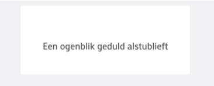
#### Oplossing:
Zorg dat statusberichten die de voortgang aangeven correct gemarkeerd zijn, zodat schermlezers deze automatisch aankondigen.
### Logo heeft geen alt-tekst
Impact: GrootType: ContentWCAG: 1.1.1
Het logo bovenaan de pagina’s heeft geen tekstalternatief.
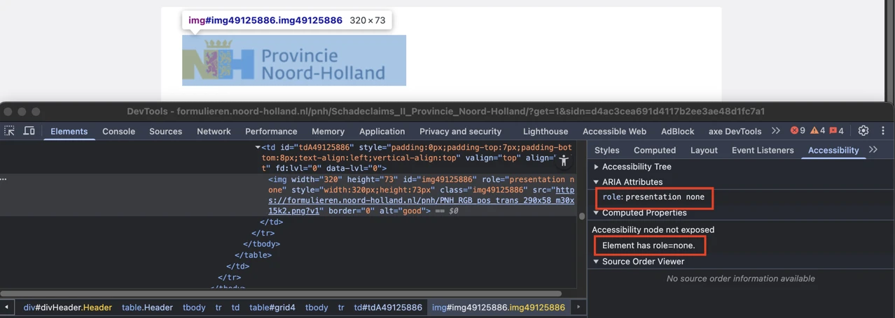
Als het `alt`-attribuut van een afbeelding leeg is (`alt=""`), negeren schermlezers de afbeelding. Door de `alt`-tekst niet in te vullen, zeg je eigenlijk: deze afbeelding is puur decoratief, geeft geen informatie. Er wordt dan dus niets voorgelezen. Daarom moet je informatieve afbeeldingen zoals een logo altijd een `alt`-tekst geven.
Daarnaast heeft dit logo het attribuut `role="presentation none"`. De ARIA-rollen `role="none"` en `role="presentation"` geven aan hulpsoftware zoals schermlezers de instructie om de semantische rol van het element te negeren. Bij een `img`-element met `role="none"` of `role="presentation"` wordt de afbeelding volledig genegeerd. Daardoor heeft het element geen rol, geen naam en wordt het helemaal niet aangekondigd.
#### Oplossing:
Voeg een `alt`-tekst toe die de volledige tekst van het logo bevat.
Verwijder `role="presentation none"` van het `img`-element dat het logo bevat.
### Interactieve elementen met uitroepteken-iconen hebben geen correcte rol en geen naam
Impact: GrootType: TechniekWCAG:4.1.2
Op alle pagina’s staan uitroepteken-iconen die een tooltip tonen bij hover en een dialoogvenster openen wanneer ze geactiveerd worden. Deze interactieve elementen hebben geen correcte ARIA-rol en geen toegankelijke naam. Zie bijvoorbeeld de pagina https://formulieren.noord-holland.nl/pnh/Schadeclaims_II_Provincie_Noord-Holland naast “Soort claim”, “Datum schade”, “Wat is de omvang van de schade?”, “Overige bijlage” en andere velden.
Hierdoor kunnen schermlezers het element niet herkennen en wordt het doel of de inhoud ervan niet overgebracht.
Oplossing:
Zorg dat de uitroepteken-iconen als interactieve elementen zijn gecodeerd, met een correcte rol en een betekenisvolle toegankelijke naam, zodat hulpsoftware ze kan herkennen en aankondigen.
#2 - Contrast van icoon op knop is te laag
Impact: MediumType: TechniekWCAG: 1.4.11
Op alle pagina’s hebben de uitroepteken-iconen, die een tooltip tonen bij hover en een dialoogvenster openen wanneer ze geactiveerd worden, de blauwe kleur (#8EBBF4). Deze blauwe kleur heeft een onvoldoende contrast ratio ten opzichte van de witte achtergrond. De contrastratio van 2,0:1 is te laag.
Het icoon is dus niet voor iedereen zichtbaar.
Oplossing:
Zorg voor een minimaal contrast van 3,0:1.
#3 - De kleur van de rand van het invoerveld heeft niet genoeg contrast
Impact: MediumType: TechniekWCAG: 1.4.11
Op de pagina’s hebben de input-elementen, zoals velden, selectievakjes en keuzerondjes, een blauwe randkleur (#8EBBF4). De contrastratio ten opzichte van de witte achtergrond is 2,0:1.
Wanneer de keuzerondjes zijn geselecteerd, heeft de blauwe stip een onvoldoende contrast ten opzichte van de lichtgrijze achtergrond (#F4F4F4): 1,8:1. Ditzelfde geldt voor het blauwe vinkje wanneer de selectievakjes zijn aangevinkt.
Oplossing:
De randen van interactieve elementen zoals invoervelden moeten minimaal een contrast van 3,0:1 hebben met de achtergrond.
#4 - Naam van de knop beschrijft niet wat de knop doet
Impact: GrootType: TechniekWCAG: 2.4.6
Op alle pagina’s wordt na het versturen van formulieren met fouten een dialoogvenster weergegeven. Dit dialoogvenster bevat een knop met de tekst "Ok", die de functie ervan niet nauwkeurig beschrijft.
Een blinde bezoeker weet daardoor niet wat deze knop precies doet.
Oplossing:
Voeg tekst toe die deze knop goed beschrijft.
#5 - Bij 400% zoom is een horizontale scrollbar aanwezig
Impact: MediumType: TechniekWCAG: 1.4.10
Wanneer alle pagina’s worden bekeken op een schermresolutie van 1280 bij 1024 pixels en ingezoomd tot 400%, verschijnt er een scrollbalk.
Horizontaal scrollen is niet toegestaan, ook niet als de viewport is ingesteld of ingezoomd op 320 CSS-pixels breed (voor verticale inhoud) of 256 CSS-pixels hoog (voor horizontale inhoud). Zorg ervoor dat de tekst binnen het scherm past. Alleen als scrollen in beide richtingen echt nodig is voor de betekenis of het gebruik van de inhoud mag het wel. Uitzonderingen zijn tabellen, betekenisvolle afbeeldingen en kaarten. Deze moeten leesbaar blijven, dus binnen deze elementen mag je wel scrollen.
Oplossing:
Controleer of het horizontaal scrollen nodig is. Als dit niet zo is, zorg dan dat horizontaal scrollen niet mogelijk is bij inzoomen.
#6 - Invoervelden voor persoonlijke gegevens hebben geen autocomplete-attribuut
Impact: MediumType: TechniekWCAG: 1.3.5
Op alle pagina's missen de formulieren met invoervelden voor persoonlijke informatie, zoals achternaam, e-mailadres en telefoonnummer, het attribuut autocomplete.
Invoervelden voor persoonlijke informatie zoals achternaam, e-mailadres of telefoonnummer moeten het autocomplete-attribuut hebben. Hierdoor kunnen browsers en hulpsoftware helpen bij het invoeren. Bijvoorbeeld door de velden al automatisch in te vullen.
Oplossing:
Gebruik het autocomplete-attribuut voor alle velden waar persoonlijke informatie in moet worden gevuld. Op deze pagina vind je meer informatie over autocomplete en welke waardes je verplicht moet gebruiken: https://www.w3.org/Translations/WCAG22-nl/#input-purposes.
#7 - Advies. Het title-element bevat geen tekst over de organisatie waartoe het formulier behoort
Impact: AdviesType: TechniekWCAG: 2.4.2
Het volgende is alleen een advies, maar het kan de toegankelijkheid van de website vergroten.
De title-elementen op alle pagina’s beschrijft de pagina, bijvoorbeeld “Schadeclaimformulier” op https://formulieren.noord-holland.nl/pnh/Schadeclaims_II_Provincie_Noord-Holland. De naam van de organisatie waartoe de formulieren behoren ontbreekt.
Deze tekst wordt getoond in de tab van de browser. Met een duidelijke beschrijving kunnen gebruikers makkelijker navigeren tussen verschillende pagina’s.
Oplossing:
Zorg dat de tekst in het title-element de pagina volledig beschrijft: de inhoud en de organisatie.
Link naar pagina: https://formulieren.noord-holland.nl/pnh/Interbestuurlijk_Toezicht_Omgeving_Provincie_Noord-Holland
#8 - Groep heeft geen naam
Impact: MediumType: TechniekWCAG: 4.1.2
Op deze pagina staat onder “Interbestuurlijk toezicht Omgeving” een groep keuzerondjes. Hoewel waarschijnlijk een fieldset nodig is, ontbreekt het legend-element.
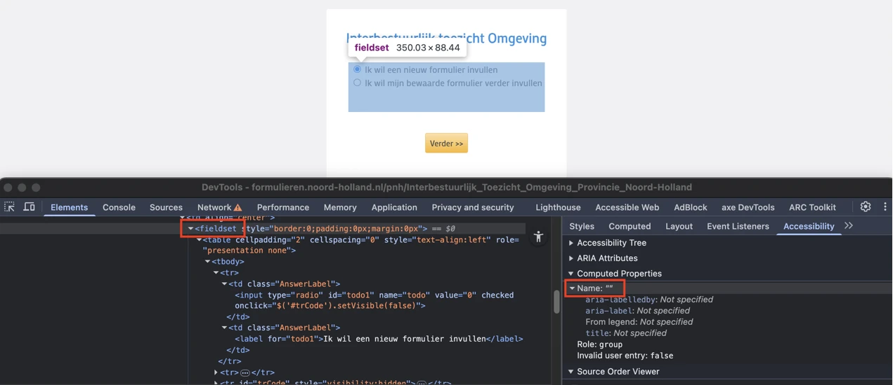
Je hebt het `legend`-element nodig om een label of naam aan de groep keuzerondjes of -vakjes te geven.
#### Oplossing:
Voeg een `legend`-element toe binnen de fieldset en vul het met de tekst “Interbestuurlijk toezicht Omgeving” (of een meer beschrijvend en toepasselijk label) om duidelijk het doel van de groep aan te geven.
### `strong`-element in plaats van kop-element
Impact: GrootType: ContentWCAG: 1.3.1
Op deze pagina, in stap 2 “Interbestuurlijk toezicht Omgeving”, is de tekst “Gegevens contactpersoon” onjuist gemarkeerd met strong in plaats van met een correcte kop.
Ditzelfde probleem doet zich voor in stap 3 “Ruimtelijke Ordening en Bouwen” bij de teksten “Ruimtelijke Ordening en Bouwen”, “Evaluatierapportage”, “Strategisch en operationeel beleidskader”, “Programma en organisatie” en andere.
Oplossing:
Verwijder het strong-element en gebruik de juiste kop-elementen om deze koppen te markeren, zoals h2 of h3.
#9 - Kleurcontrast van tekst is te laag (tekst kleiner dan 24px en niet vetgedrukt)
Impact: MediumType: TechniekWCAG: 1.4.3
Op deze pagina, in de stap “Ruimtelijke Ordening en Bouwen”, staan links met blauwe tekst (#8EBBF4) zoals “Omgevingswet” en “Omgevingsbesluit” op een witte achtergrond. De contrastratio is te laag: 2,0:1.
Oplossing:
Deze tekst is kleiner dan 24px en niet vetgedrukt, daarom moet het contrast minimaal 4,5:1 zijn. Op deze pagina staat een instructie die uitlegt hoe je kleurcontrast kan testen: https://properaccess.nl/hoe-test-ik-kleurcontrast/.
#10 - Onzichtbaar element krijgt toetsenbordfocus
Impact: GrootType: TechniekWCAG: 2.4.3
Op deze pagina, in de stap “Ruimtelijke Ordening en Bouwen”, komt de toetsenbordfocus terecht op een onzichtbaar interactief element na de link “Omgevingswet”.
De toetsenbordfocus mag niet terechtkomen op onzichtbare interactieve elementen (links, knoppen, formuliervelden). Als dat wel gebeurt, kan een bezoeker ze onbedoeld activeren.
Oplossing:
Zorg dat alleen elementen die zichtbaar zijn toetsenbordfocus kunnen krijgen en dat de focusvolgorde logisch is.
#11 - Link heeft geen toegankelijke naam
Impact: GrootType: TechniekWCAG:4.1.2
Op deze pagina, in de stap “Ruimtelijke Ordening en Bouwen”, staat een link die visueel verborgen is maar toegankelijk is voor schermlezers. Deze link heeft geen toegankelijke naam.
Hierdoor begrijpen bezoekers die een schermlezer gebruiken niet wat de bestemming of de functie is van de link.
Oplossing:
Voorzie deze link van een toegankelijke naam, bijvoorbeeld door gebruik te maken van een beschrijvende linktekst, een aria-label of een andere geschikte techniek.
#12 - Niet-unieke toegankelijke namen voor formulierelementen
Impact: MediumType: TechniekWCAG: 2.4.6
Op deze pagina, in de stap “Ruimtelijke Ordening en Bouwen”, staan meerdere invoervelden met dezelfde tekst en toegankelijke naam “Uploaden”. Voor schermlezers is het daardoor niet mogelijk om onderscheid te maken tussen de verschillende uploadvelden, omdat elk veld identiek wordt aangekondigd als “Uploaden”. Hierdoor is het onduidelijk voor welk document of welke sectie het bestand moet worden geüpload, wat verwarring veroorzaakt.
Deze stap bevat ook knoppen met een paperclip-icoon. De toegankelijke namen van deze knoppen zijn hetzelfde: “Kies bestand”. Deze knoppen voeren echter verschillende functies uit, namelijk het toevoegen van bestanden voor verschillende secties.
Ditzelfde probleem doet zich voor bij de “x”-knoppen die verschijnen naast de knop met het paperclip-icoon wanneer bestanden zijn geüpload. De toegankelijke namen van deze knoppen zijn ook hetzelfde: “Verwijder bestand”.
Oplossing:
Zorg ervoor dat elk uploadveld en elke knop een unieke en beschrijvende tekst heeft.
#13 - Onjuist input-type gebruikt voor het uploaden van bestanden
Impact: MediumType: TechniekWCAG: 4.1.2
Op deze pagina, in de stap “Ruimtelijke Ordening en Bouwen”, zijn de velden “Uploaden” gemarkeerd met input type="text" en hebben de toegankelijke naam “Uploaden .” Dit input-element wordt echter gebruikt om een bestand te uploaden in plaats van tekst in te voeren.
Voor schermlezers wordt dit input-veld aangekondigd als een tekstveld waarin tekst getypt kan worden, waardoor niet duidelijk is dat het bedoeld is voor het uploaden van een bestand. Dit zorgt voor verwarring en kan ertoe leiden dat het formulier niet correct wordt ingevuld.
Oplossing:
Zorg dat formulierelementen het juiste input-type en de juiste rol gebruiken die overeenkomen met hun werkelijke functie, zodat hulpsoftware ze correct kan aankondigen.
#14 - Invoerveld heeft geen toegankelijke naam
Impact: MediumType: TechniekWCAG: 4.1.2
Op deze pagina, in de stap “Ruimtelijke Ordening en Bouwen”, verschijnen de invoervelden wanneer de bezoeker de keuzerondje “uploaden” selecteert. Deze velden hebben geen toegankelijke naam.
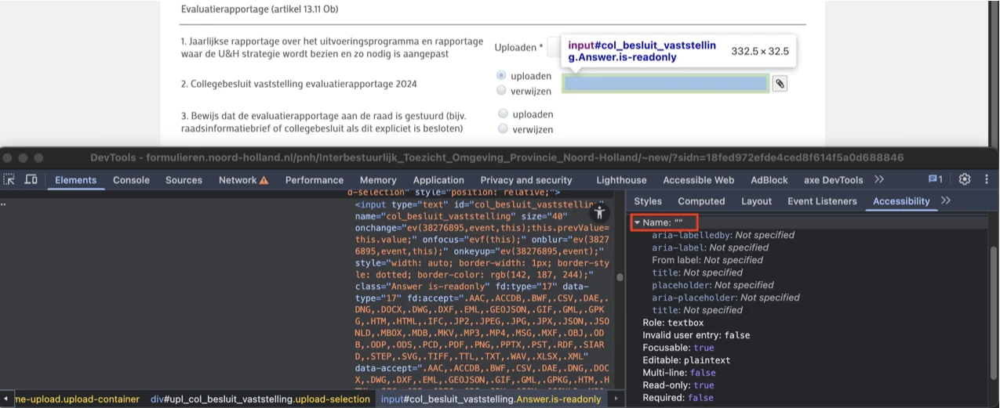
Hierdoor is het voor blinde of slechtziende bezoekers die een schermlezer gebruiken niet duidelijk wat zij in moeten vullen.
#### Oplossing:
Dit los je op door het invoerveld een toegankelijke naam te geven, bijvoorbeeld door een `label`-element aan het veld te koppelen.
### Invoervelden hebben geen permanent zichtbaar label
Impact: MediumType: TechniekWCAG: 3.3.2
Op deze pagina, in de stap “Ruimtelijke Ordening en Bouwen”, verschijnen de invoervelden wanneer de bezoeker het keuzerondje “uploaden” selecteert. Deze invoervelden hebben geen permanent zichtbaar label.
Invoervelden moeten een label hebben dat altijd zichtbaar is. Dat kan een tekst zijn of een afbeelding (icoon). Een invoerveld zonder zichtbaar label kan mensen in de war brengen, omdat ze niet weten wat ze moeten invullen.
Oplossing:
Voeg een label toe in de vorm van een tekst of een icoon.
#15 - Groepslabels zijn niet gekoppeld aan groep
Impact: MediumType: TechniekWCAG: 1.3.1
Op deze pagina, in de stap “Ruimtelijke Ordening en Bouwen”, is een formulier aanwezig. In dit formulier staan groepen keuzerondjes met groepslabels, maar deze labels zijn niet programmatisch gekoppeld aan de bijbehorende groepen.
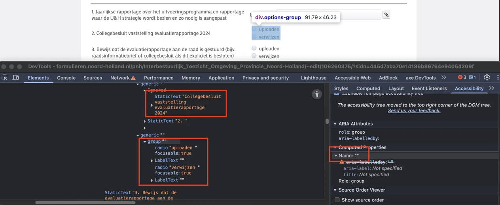
Hierdoor weten bezoekers die een schermlezer gebruiken niet dat er een relatie is tussen de groepslabels en de bijbehorende groepen.
#### Oplossing:
Zorg dat de groepslabels in de code expliciet gekoppeld zijn aan de groepen keuzerondjes. Dit kan gedaan worden met `aria-labelledby` dat verwijst naar het element dat de tekst van het groepslabel bevat.
### Naam van de knop beschrijft niet wat de knop doet
Impact: GrootType: TechniekWCAG: 2.4.6
Op deze pagina, in de stap “Ruimtelijke Ordening en Bouwen”, staat naast het veld “Bijlage” een selectievakje met het label “+”. De toegankelijke naam van dit selectievakje is ook “+”, wat de functie ervan niet nauwkeurig beschrijft.
Een blinde bezoeker weet daardoor niet wat dit selectievakje precies doet.
Oplossing:
Voeg tekst toe die dit selectievakje goed beschrijft.
#16 - Aangepaste focusindicator heeft onvoldoende kleurcontrast
Impact: GrootType: TechniekWCAG: 1.4.11
In de stap “Ruimtelijke Ordening en Bouwen” wordt een aangepaste toetsenbordfocus-indicator gebruikt op het selectievakje met “+” onder “Overige bijlagen”, zichtbaar als een blauwe rand op een witte achtergrond. De contrastratio tussen deze kleuren is 2,0:1.
Oplossing:
Zorg dat het contrast van de aangepaste focusindicator minimaal 3,0:1 is.
Link naar pagina: https://formulieren.noord-holland.nl/pnh/Schadeclaims_II_Provincie_Noord-Holland
strong-element in plaats van kop-element
Impact: MediumType: ContentWCAG: 1.3.1
Op deze pagina zijn de volgende teksten onjuist gemarkeerd met strong in plaats van met correcte koppen: "Gegevens indiener", "Gegevens schadelocatie" en "Gegevens schade".
Het strong-element is niet bedoeld om koppen mee te markeren. Je moet dat altijd doen met een kop-element, zoals h2. Koppen gebruik je om een tekst te structureren. Alleen als je ze als kop markeert met een kop-element, begrijpt hulpsoftware die betekenis. Het strong-element gebruik je wel als je nadruk wilt geven aan enkele woorden of een zinsdeel.
Oplossing:
Verwijder het strong-element en gebruik de juiste kop-elementen om deze koppen te markeren, zoals h2 of h3.
#17 - Onzichtbaar element krijgt toetsenbordfocus
Impact: GrootType: TechniekWCAG: 2.4.3
Op deze pagina komt de toetsenbordfocus terecht op een onzichtbaar interactief element na het invoerveld onder “Plaats”.
De toetsenbordfocus mag niet terechtkomen op onzichtbare interactieve elementen (links, knoppen, formuliervelden). Als dat wel gebeurt, kan een bezoeker ze onbedoeld activeren.
Oplossing:
Zorg dat alleen elementen die zichtbaar zijn toetsenbordfocus kunnen krijgen en dat de focusvolgorde logisch is.
#18 - Link heeft geen toegankelijke naam
Impact: GrootType: TechniekWCAG:4.1.2
Op deze pagina, in de sectie "Gegevens schadelocatie", staat een link die visueel verborgen is maar toegankelijk is voor schermlezers. Deze link heeft geen toegankelijke naam.
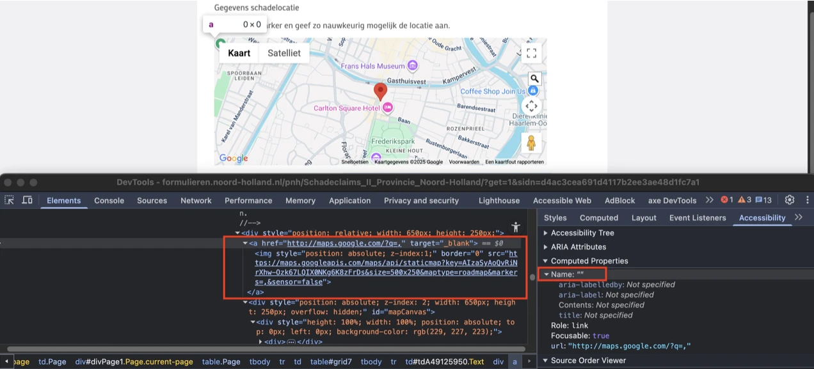
Hierdoor begrijpen bezoekers die een schermlezer gebruiken niet wat de bestemming of de functie is van de link.
#### Oplossing:
Voorzie deze link van een toegankelijke naam, bijvoorbeeld door gebruik te maken van een beschrijvende linktekst, een `aria-label` of een andere geschikte techniek.
### Het contrast van de placeholder-tekst is kleiner dan 4,5:1
Impact: MediumType: TechniekWCAG: 1.4.3
Op deze pagina zijn invoervelden met placeholder teksten aanwezig: “Datum schade” en “Wat is de omvang van de schade?”. De grijze tekst (#ADADAE) van de plaatshouder heeft ten opzichte van de lichtgrijze achtergrond (#F6F6F8) een contrastratio van 2,1:1.
Oplossing:
Zorg dat de placeholder-tekst een contrast van minstens 4,5:1 tegen de achtergrond heeft.
#19 - Aangepaste focusindicator heeft onvoldoende kleurcontrast
Impact: GrootType: TechniekWCAG: 1.4.11
Een aangepaste toetsenbordfocus-indicator wordt gebruikt op de selectievakjes en is zichtbaar als een blauwe rand op een witte achtergrond. De contrastratio tussen deze kleuren is 2,0:1.
Op de pagina wordt niet de standaard focusindicator gebruikt, maar een aangepaste versie met een (gekleurde) rand. Die aanpassing is met CSS toegevoegd. Voor de standaard focusindicator zijn geen contrasteisen in WCAG; die wordt dus altijd goedgekeurd voor dit succescriterium. Bezoekers kunnen een standaard focusindicator namelijk zelf aanpassen, naar hun eigen wensen. Maar dat kan niet meer als de focusindicator met CSS is aangepast. Daarom gelden de contrasteisen in dat geval wél.
Oplossing:
Zorg dat het contrast van de aangepaste focusindicator minimaal 3,0:1 is.
#20 - ARIA-hidden is gebruikt voor een interactief element
Impact: MediumType: TechniekWCAG: 4.1.2
Op deze pagina staat naast het veld “Datum schade” een knop met een kalendericoon die verborgen is met aria-hidden="true". Hierdoor is de knop, inclusief alle elementen binnen de knop, onzichtbaar voor schermlezers. De verborgen klikbare elementen kunnen op dit moment echter nog steeds toetsenbordfocus krijgen.
Dit zorgt voor een aantal problemen. Zo kunnen blinde bezoekers nog steeds ernaartoe navigeren met het toetsenbord, alleen weten ze niet wat deze elementen zijn of wat hun functie is. Bovendien hebben de links “EN”, “NL” en het logo nu geen toegankelijke naam meer.
Oplossing:
Zorg dat elementen die met aria-hidden zijn verborgen zelf geen toetsenbordfocus kunnen krijgen, en zorg dat ze ook geen elementen bevatten die focus kunnen krijgen.
#21 - Knop heeft geen toegankelijke naam
Impact: GrootType: TechniekWCAG: 4.1.2
Op deze pagina staat naast het veld “Datum schade” een knop met een kalendericoon. Deze knop heeft geen toegankelijke naam.
Hierdoor begrijpen bezoekers die een schermlezer gebruiken niet wat de bestemming of de functie is van de knop.
Oplossing:
Voorzie deze link van een toegankelijke naam, bijvoorbeeld door gebruik te maken van een beschrijvende linktekst, een aria-label of een andere geschikte techniek.
#22 - Knoppen met dezelfde iconen en toegankelijke namen hebben een andere functie
Impact: GrootType: TechniekWCAG: 2.4.6
Deze pagina bevat knoppen met een paperclip-icoon. De toegankelijke namen van deze knoppen zijn hetzelfde: “Kies bestand”. Deze knoppen voeren echter verschillende functies uit, namelijk het toevoegen van bestanden voor verschillende secties.
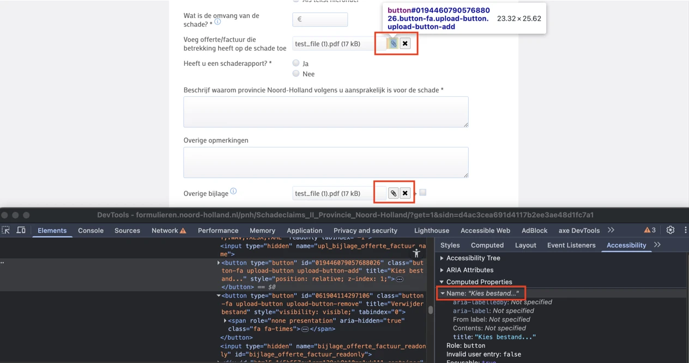
Ditzelfde probleem doet zich voor bij de knoppen met kruisjes die verschijnen naast de knop met het paperclip-icoon wanneer bestanden zijn geüpload. De toegankelijke namen van deze knoppen zijn ook hetzelfde: “Verwijder bestand”.
Je kunt met deze knoppen een andere actie uitvoeren. Dit kan verwarrend zijn voor bezoekers met een schermlezer. Het is niet duidelijk welke actie elke knop uitvoert.
#### Oplossing:
Zorg dat de toegankelijke namen passen bij de actie van de knoppen, zodat knoppen met verschillende functies ook verschillende toegankelijke namen hebben.
### Naam van de knop beschrijft niet wat de knop doet
Impact: GrootType: TechniekWCAG: 2.4.6
Op deze pagina heeft het selectievakje naast het veld “Overige bijlage” het label “+” en is de toegankelijke naam ervan ook “+”. Deze naam beschrijft de functie van het element niet nauwkeurig.
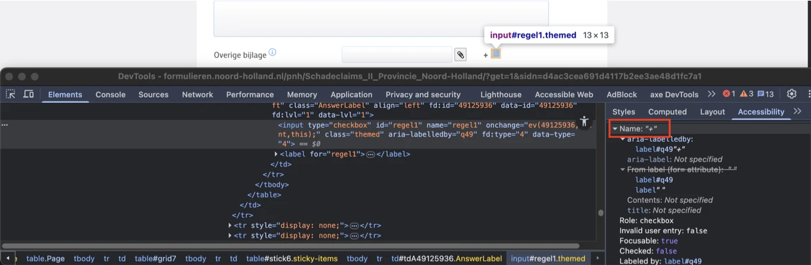
Een blinde bezoeker weet daardoor niet wat dit selectievakje precies doet.
#### Oplossing:
Voeg tekst toe die dit selectievakje goed beschrijft.
Link naar pagina: https://formulieren.noord-holland.nl/pnh/Vraag_Commissaris_Koning
strong-element in plaats van kop-element
Impact: GrootType: ContentWCAG: 1.3.1
Op deze pagina zijn de volgende teksten onjuist gemarkeerd met strong in plaats van met een correcte kop: “Besluit in voorbereiding (ontwerpbesluit)”, “Genomen besluit” en “U heeft al bezwaar gemaakt”.
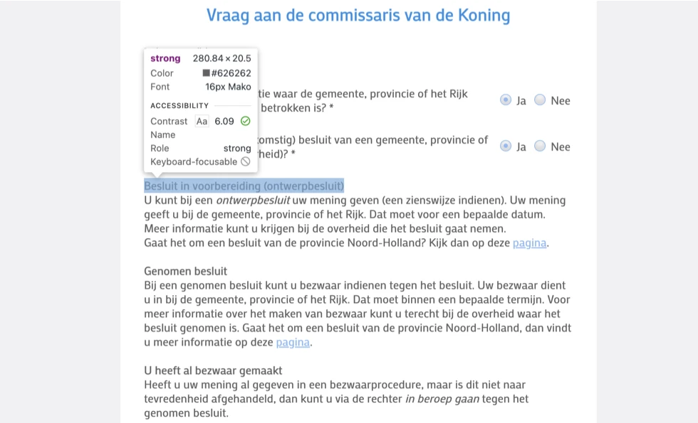
#### Oplossing:
Verwijder het `strong`-element en gebruik de juiste kop-elementen om deze koppen te markeren, zoals `h2` of `h3`.
### Kleurcontrast van tekst is te laag (tekst kleiner dan 24px en niet vetgedrukt)
Impact: MediumType: TechniekWCAG: 1.4.3
Op deze pagina staan links met blauwe tekst (#8EBBF4) op een witte achtergrond. De contrastratio is te laag: 2,0:1.
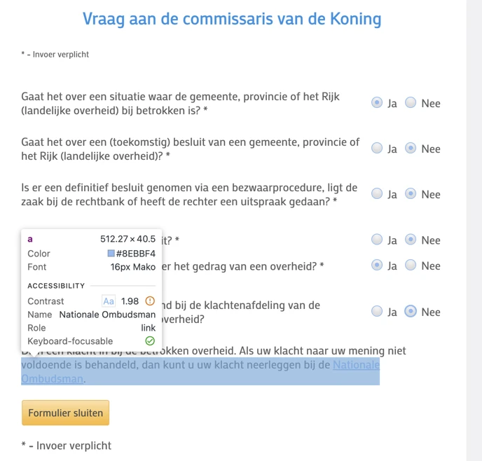
#### Oplossing:
Deze tekst is kleiner dan 24px en niet vetgedrukt, daarom moet het contrast minimaal 4,5:1 zijn. Op deze pagina staat een instructie die uitlegt hoe je kleurcontrast kan testen: https://properaccess.nl/hoe-test-ik-kleurcontrast/.
Link naar pagina: https://formulieren.noord-holland.nl/pnh/aanvraag_WOO_pnh
#23 - Inhoud wordt meerdere keren aangekondigd
Impact: MediumType: TechniekWCAG: 1.3.1, 4.1.2
Op deze pagina, in de samenvattingsstap van het formulier, is de hoofdinhoud gemarkeerd als een tabel. De hoofdinhoud bevindt zich in een tabelcel met een toegankelijke naam. Deze toegankelijke naam bevat de volledige tekst van de tabel.
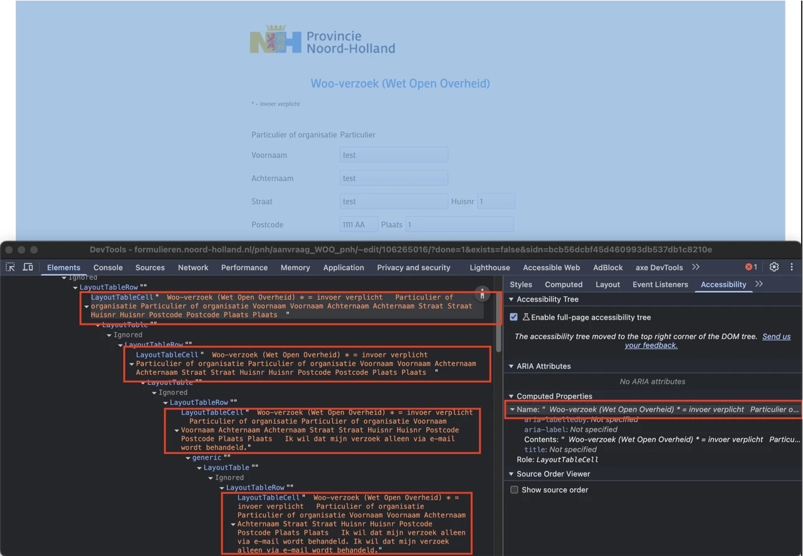
Daardoor lezen schermlezers de volledige inhoud van de samenvatting meerdere keren voor. Dit zorgt voor onnodige herhaling en kan het moeilijk maken om de samenvatting goed te begrijpen.
#### Oplossing:
Verwijder toegankelijke namen op containerniveau die de zichtbare inhoud dupliceren. Als een groepslabel nodig is, gebruik dan een korte en beschrijvende labeltekst die niet meerdere keren herhaald wordt.
### Aangepaste focusindicator heeft onvoldoende kleurcontrast
Impact: GrootType: TechniekWCAG: 1.4.11
Een aangepaste toetsenbordfocus-indicator wordt gebruikt op het selectievakje met het label “Ik wil dat mijn verzoek alleen via e-mail wordt behandeld.” en is zichtbaar als een blauwe rand op een witte achtergrond. De contrastratio tussen deze kleuren is 2,0:1.
Oplossing:
Zorg dat het contrast van de aangepaste focusindicator minimaal 3,0:1 is.
Over dit onderzoek
Leeswijzer
Onze rapporten zijn anders. Bij het bespreken van de gevonden problemen volgen wij niet de structuur van de norm, maar die van jouw website of app. Hierdoor kun je gewoon per pagina of scherm aan de slag gaan. Wel zo makkelijk! Je vindt verderop een overzicht van alle pagina’s met problemen.
We geven je bij elk gevonden issue een paar voorbeelden, maar niet een complete lijst. Controleer zelf of het probleem ook nog op andere plekken voorkomt. Zie het rapport als een leidraad.
Gebruikte norm
Dit onderzoek laat zien in hoeverre de website op dit moment voldoet aan WCAG 2.2, niveau A en AA. WCAG staat voor Web Content Accessibility Guidelines. Dit is de internationale norm voor digitale toegankelijkheid. De Europese norm EN 301 549 bevat alle eisen van WCAG op niveau A en AA.
In dit rapport hebben we korte beschrijvingen van de succescriteria uit de norm opgenomen, met een algemene uitleg erbij. Wil je ze helemaal lezen? Bekijk dan de documentatie van WCAG.
Gebruikte onderzoeksmethode
We gebruiken de onderzoeksmethode WCAG-EM van het W3C. Het proces ziet er als volgt uit:
vaststellen wat binnen en buiten scope valt
vaststellen welke technologieën zijn gebruikt
steekproef (sample) samenstellen
steekproef onderzoeken
gevonden issues beschrijven
Het grootste deel van het onderzoek doen we met de hand. Voor een deel van de toegankelijkheidseisen gebruiken we automatische tools als ondersteuning, zoals axe-core en Chrome Developer Tools.
Belangrijk om te weten
Dit rapport helpt je om de toegankelijkheid van je website te verbeteren. Maar let op: het is geen definitieve, volledige lijst van alle aanwezige toegankelijkheidsproblemen. Dat zit zo:
Het is een steekproef
Ten eerste is het onderzoek gebaseerd op een steekproef. Die is op een betrouwbare manier genomen, en de meeste problemen zullen daardoor zeker aan het licht komen. Toch kan een probleem net buiten de steekproef vallen. Bij een volgend onderzoek kan het wel ontdekt worden.
Op basis van falsificatie
We beoordelen vanuit het principe van falsificatie. Dat houdt in dat we proberen te bewijzen dat iets niet waar is, in plaats van te bevestigen dat het klopt. ‘Voldoet’ betekent daarom dat we geen reden hebben gevonden om een punt af te keuren. Maar als we later wél een reden vinden, kan het alsnog worden afgekeurd.
Voortschrijdend inzicht
Het komt voor dat de beoordeling van een succescriterium op detailniveau verandert. De norm beschrijft namelijk niet élk mogelijk scenario. Samen met andere onderzoeksbureaus overleggen we hoe we met bepaalde situaties omgaan. Zo kan iets dat nu wordt afgekeurd, soms bij een volgend onderzoek worden goedgekeurd en andersom.
Oplossen leidt tot nieuw probleem
Ten slotte kan het gebeuren dat bij het oplossen van een probleem onbedoeld een nieuw toegankelijkheidsprobleem ontstaat. Dat komt dan bij een volgend onderzoek pas naar voren.
Hoe werkt dit rapport?
Bevindingen bekijken en filteren
Alle gevonden toegankelijkheidsproblemen staan onder Gevonden problemen. Je kunt de bevindingen filteren op:
Impact (Groot, Medium, Klein, Advies) — hoe ernstig is het probleem voor de gebruiker?
Type (Content, Techniek) — moet de inhoud of de techniek worden aangepast?
Status (Open, Opgelost) — welke problemen zijn al verholpen?
Voortgang bijhouden
Je kunt je voortgang op twee manieren bijhouden:
CSV-export — exporteer alle bevindingen als CSV-bestand en laad het in een (online) spreadsheet om met je team samen te werken.
Jira-export — exporteer alle bevindingen als Jira-compatibel CSV-bestand. Importeer het via Jira > Issues > Import issues from CSV. Bevindingen worden aangemaakt als bugs met prioriteit op basis van impact.
Registreer in de browser — activeer deze optie om per bevinding bij te houden of het is opgelost. Je voortgang wordt opgeslagen in je browser. Niemand anders kan je resultaat zien. Let op: de voortgang is gekoppeld aan je browser. Als je een andere browser of een ander apparaat gebruikt, begint de telling opnieuw.
Plan van aanpak — download een geprioriteerd plan van aanpak om de gevonden problemen stap voor stap op te lossen. Dit is beschikbaar bij audits vanaf maart 2026.
Link naar een specifieke bevinding delen
Bij elke bevinding verschijnt een link-icoon wanneer je er met de muis overheen gaat. Klik op dit icoon om de directe link naar die bevinding te kopiëren. Je kunt deze link plakken in een e-mail of chatbericht, bijvoorbeeld om een vraag te stellen aan Proper Access over een specifiek punt.